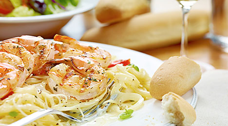

Overview
Details
Share this itinerary:
Jun 24
Jun 25
Jun 26
Jun 26
Jun 26
Jun 26
Trattoria Da Ropeton Trattoria Da Ropeton Trattoria Da Ropeton
Via Fontana del Ferro, 1, Verona, Italy
10.00

Amazing owner who sings and serves the food himself! Experience which you'll never forget and will include to the travel different mockups :)
Trattoria Da Ropeton
Via Fontana del Ferro, 1, Verona, Italy
12.00
Amazing owner who sings and serves the food himself! Experience which you'll never forget and will include to the travel different mockups :)
Trattoria Da Ropeton
Via Fontana del Ferro, 1, Verona, Italy
+390458030040
trattoriadaropeton.it?